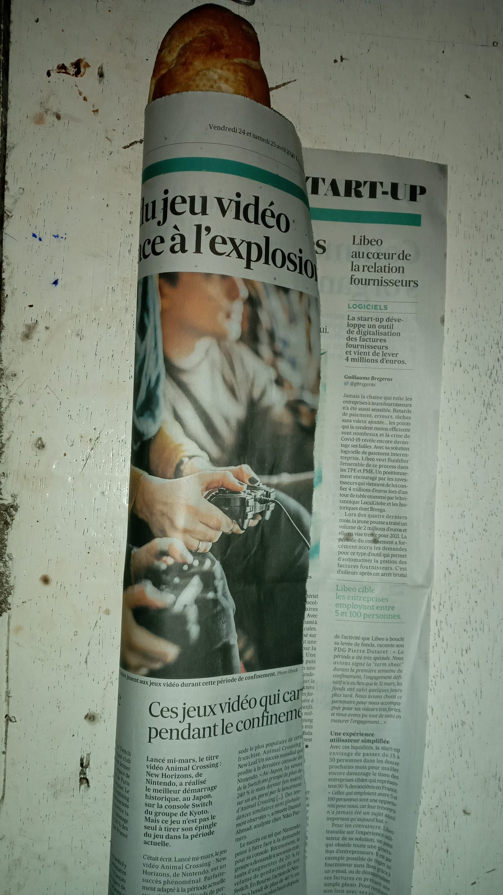
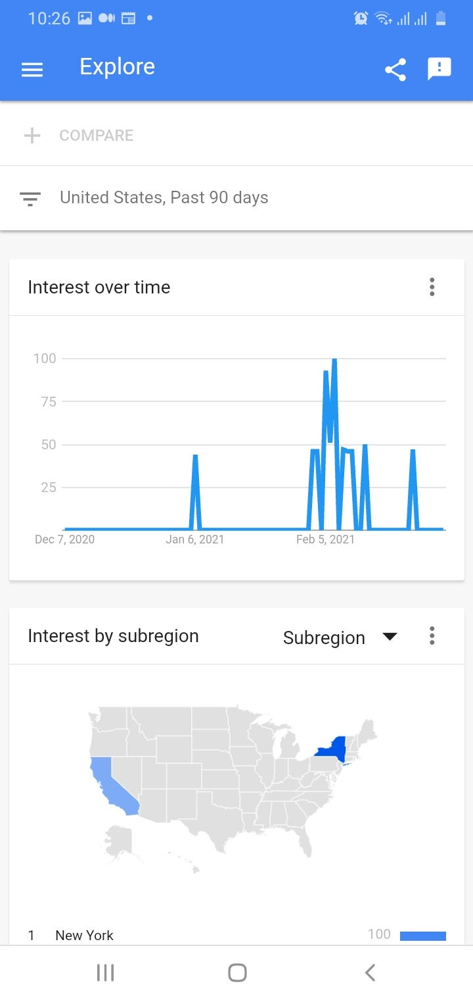
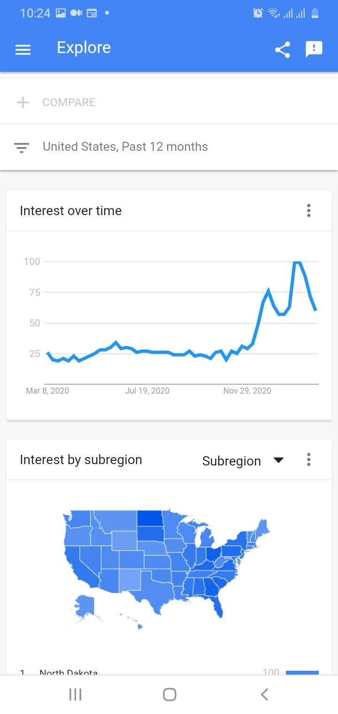
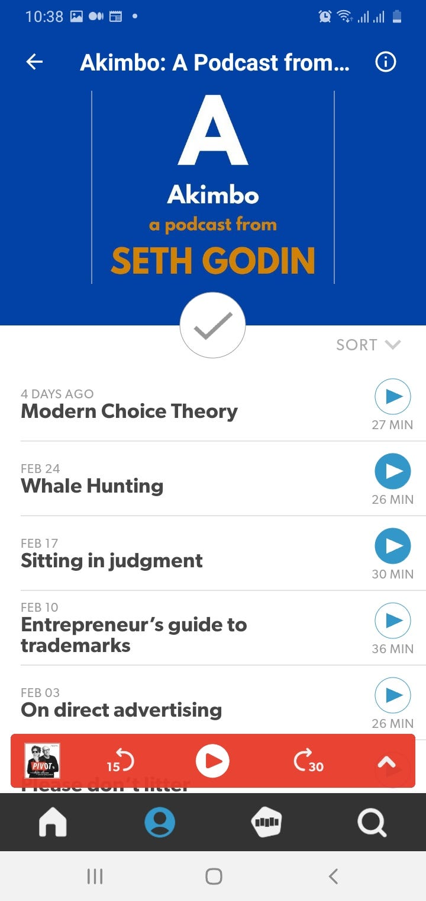

Mar 7, 2021
·
Early stage & Early adopters

Here is what illustrates where those who are eager to join this new social media live.

They are early adopters, they may be those who will first jump on talkbook. Social media were designed to only spread and market to people. Better designed social media spread more than hook driven ones but they at the same time serve people by helping them have a clearer path to their goals without hustling them with products and services by ads but by always giving them possible ideas and solutions if they need them and provide the permission to get them
Here is how a social media startup grows with the network effect

But with a this podcast also
